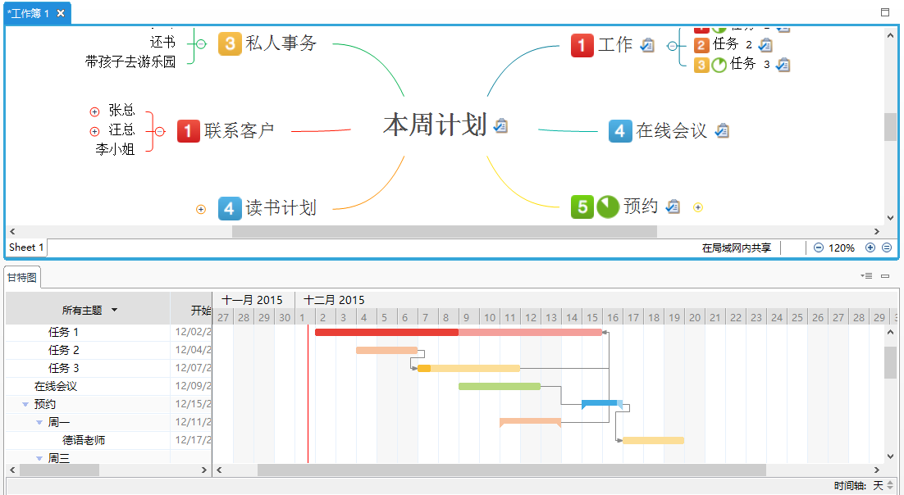
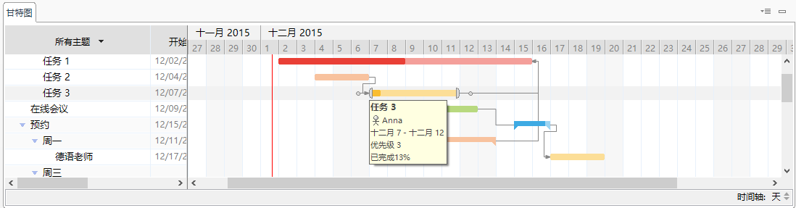
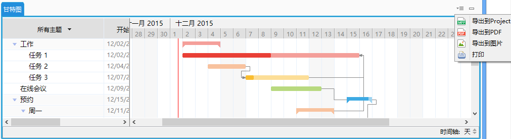
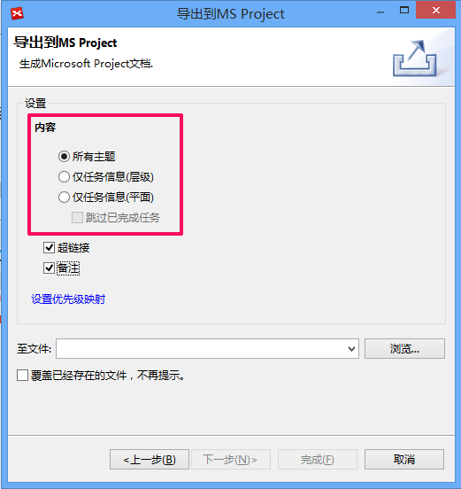
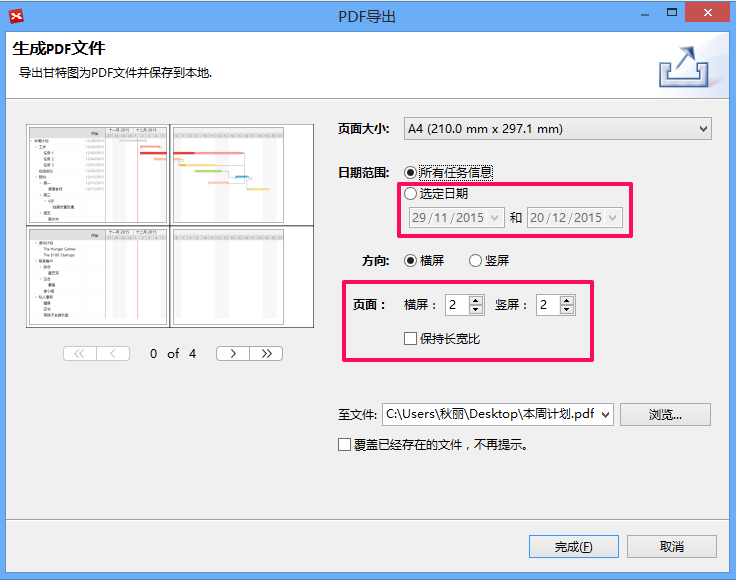
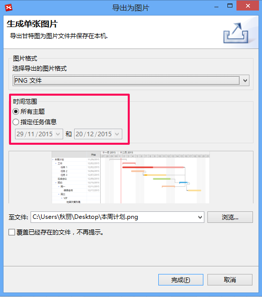
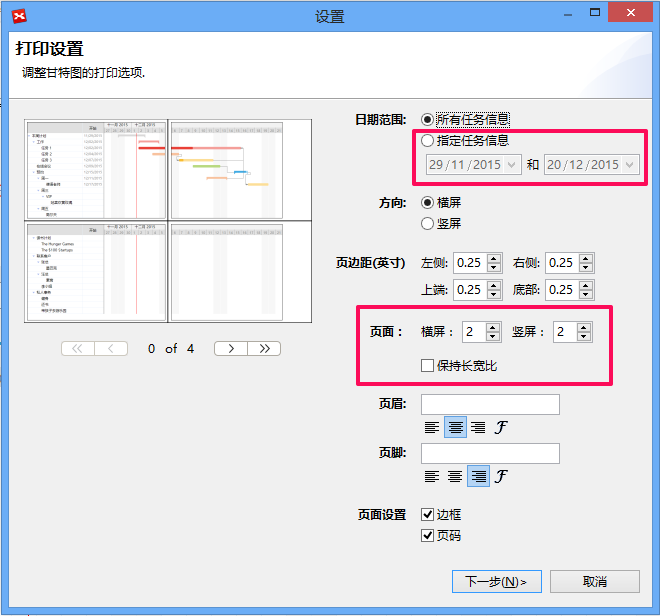

甘特图
在任务信息视图中添加任务信息后，您就可以在甘特图中查看任务信息了。请在菜单栏选择“窗口 - 甘特图”。
甘特图视图
截图上面部分显示的是思维图，下面显示的是甘特图。甘特图显示了当前思维图的任务信息，所以当您切换到别的思维图，画布或者下钻到另外的分支时，甘特图显示内容会发生改变。
甘特图视图分为两部分: 树状任务信息列表及带任务时间的任务栏视图。

- 在左边部分，您可以编辑任务信息，包括开始/结束时间，负责人，优先级以及进度。
- 在视图右边，您能看到任务栏，不同的颜色代表任务的不同优先级别。两个任务间的连线代表两个任务间的关联。
除了浏览各个任务，您还可以，
- 修改时间轴为小时，天，星期几，周或者月；
- 把鼠标移动到任务条上即可显示任务详细信息，如开始/结束时间，优先级和状态；
- 选中并移动任务条您可修改其开始/结束时间；
- 选中并移动任务条的一个端点，您可修改其任务期；
- 选中任务条开始或结束的小圆圈您可链接到任一其他任务以建立两者间的关联。
注意: 关联类型
- 截止日期至开始日期，表明只有当任务B结束了任务A才能开始。
- 开始日期至截止日期，表明只有当任务B开始了任务A才能结束。
- 开始日期至开始日期，表明只有当任务B开始了任务A才能开始。
- 截止日期至截止日期，表明只有当任务B结束了任务A才能结束。
导出甘特图到Microsoft Project/PDF/图片和打印甘特图
XMind 7支持甘特图视图导出到多种文件格式以及分页打印。

导出甘特图到Microsoft Project:
- 点击视图右上角下拉菜单中的“导出到Project”；
- 在接下来的对话框勾选您想导出的内容；
- 选择导出位置。

导出甘特图到PDF思维图:
- 点击视图右上角下拉菜单中的“导出到PDF”；
- 在接下来的对话框调整导出设置；
- 选择导出位置。

导出甘特图到图片:
- 点击视图右上角下拉菜单中的“导出到图片”；
- 在接下来的对话框调整导出设置；
- 选择导出位置。

打印甘特图:
- 点击视图右上角下拉菜单中的“打印”；
- 在接下来的对话框调整打印设置；
- 点击“下一步”选择打印机
- 点击“打印”
